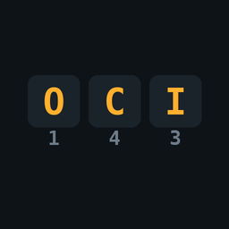

On Google PlaySarneg
ATAK-CIV 5.8 plugin
Encrypts the numbers in a message with the SARNEG cipher and leaves the rest of the text readable. It writes nothing to the device.
Why it exists
A position, a time, a heading and a head count carry most of what a radio or chat message is worth. The rest of the sentence usually gives away nothing the other side does not already know.
SARNEG hides the numbers alone. The sentence stays readable for the recipient and empty for anyone who does not know the key word.
How the cipher works
The key word is ten distinct letters. A letter's position stands for a digit: the first is 0, the last is 9. With the key word POLICJANTU, “eta 1430” comes out as “eta OCIP”.
A capital letter in the result means an encrypted digit; lowercase means plain text. The MGRS zone stays in the clear, because it identifies a place rather than being a number worth hiding.
This is a substitution cipher, not modern cryptography. It hides numbers from someone who does not know the key word, for the length of one conversation.
What is cleared, and when
The key word and the text live in memory only. There is no file, no entry in the ATAK preferences, and the log records event names alone.
A countdown of 30 to 60 seconds wipes the result, depending on its length. The plugin clears the system clipboard separately, 60 seconds after a copy. The result window blocks screenshots.
What it taught me
On an XCover 5 the “Run” button was fourteen pixels tall and sat on the edge of the screen. Compilation, 103 tests and the package checks see none of that - it surfaced while taking screenshots on the phone.